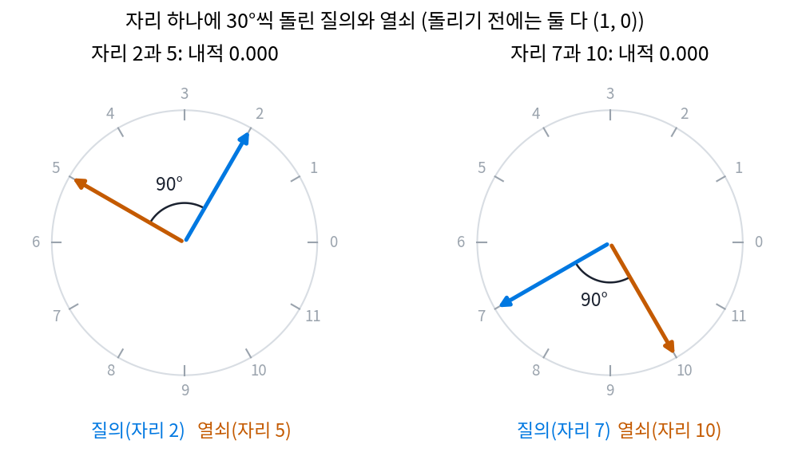

위치 인코딩: 순서를 모르는 어텐션에 자리를 알려 주기
셀프 어텐션은 내용만으로 비중을 정해서 멀리 있는 짝을 찾았다. 그런데 바로 그 성질이 문제를 하나 낳는다. 한 줄 그림의 여섯 칸을 [5, 2, 4, 0, 1, 3] 순서로 뒤섞어 같은 셀프 어텐션에 넣어 보면, 칸마다 받아 가는 벡터가 뒤섞기 전과 소수점 끝자리까지 같고 자리만 따라 옮겨 간다(가장 큰 차이 0). 「개가 사람을 물었다」와 「사람이 개를 물었다」에서 「물었다」가 받아 가는 것이 똑같다는 뜻이다. 그림이라면 위쪽 칸과 아래쪽 칸을 가르지 못한다. 합성곱은 「한 칸 위」라는 자리에 무게를 매겼으니 이런 일이 없었다. 내용으로 읽는 장점을 지키면서 자리도 알려 줄 수는 없을까?
역사: 더하기에서 돌리기로
바스와니와 동료들은 자리 번호를 벡터로 펴서 토큰 벡터에 더했다. 펴는 법은 빠르기가 등비수열로 다른 사인과 코사인 여러 개다(파장은 2π에서 10000 · 2π까지). 잡음 수준을 신경망에 넣던 사인 인코딩은 이 식에 자리 번호 대신 걸음 번호를 넣은 것이다. 논문은 이 꼴을 고른 까닭을 둘 적었다. 거리가 일정한 두 자리의 벡터는 서로 일차 변환으로 옮겨지니 「몇 칸 떨어졌나」를 배우기 쉬울 것이라는 짐작, 그리고 학습 때보다 긴 문장에도 쓸 수 있으리라는 기대다. 자리마다의 벡터를 그냥 학습하게 해 봤더니 결과가 거의 같았다는 것도 함께 적었다.
더하는 방식에는 남는 불만이 있었다. 자리 벡터를 내용 벡터에 섞어 버리면 질의와 열쇠의 내적에 「내용 × 내용」, 「내용 × 자리」, 「자리 × 자리」가 뒤엉켜 들어간다. 2021년 쑤젠린(Jianlin Su)과 동료들은 더하는 대신 돌리자고 했다. 자리 m의 질의와 열쇠를 각도 m · ω만큼 돌려 두면, 두 벡터의 내적에는 각도의 차이 (m − n)ω만 남는다. 논문은 이 방법이 「절대 자리를 회전 행렬로 적으면서 어텐션 식 안에서는 상대 자리를 드러낸다」고 소개했다. 이것이 회전 위치 인코딩(Rotary Position Embedding, 줄여서 RoPE)이다.
돌려서 적은 자리는 차이만 남긴다
질의와 열쇠가 둘 다 (1, 0)인 2차원 벡터이고, 자리 하나에 ω = 30°씩 돌린다고 하자.
자리 (2, 5)인 짝은 90° 차이라 내적이 0이고, 자리 (7, 10)인 짝도 같은 90° 차이라 0이다. 바로 이웃한 (3, 4)는 30° 차이라 0.866이다. 같은 질의와 열쇠에 사인 위치 인코딩을 더하는 방식을 쓰면, 똑같이 세 칸 떨어진 (2, 5)는 −0.040, (7, 10)은 0.123으로 내적이 달라진다. 돌리는 방식에서는 「몇 칸 떨어졌나」가 같으면 어디에 있든 같은 비중이 나온다.

실제 모델은 질의와 열쇠의 성분을 둘씩 짝지어, 짝마다 빠르기가 다른 ω로 돌린다. 빠른 짝은 가까운 자리를, 느린 짝은 먼 자리를 가른다. 더하든 돌리든, 이렇게 토큰마다의 자리를 벡터에 적어 넣는 방법을 위치 인코딩 (자리를 벡터에 적어 넣기 / positional encoding)이라 한다. 더하는 꼴의 위치 벡터를 이 절에서는 p(m)으로 적는다.
ML에서: 그림은 두 방향으로 돌린다
글은 자리가 한 줄이지만 그림은 행과 열이 있다. FLUX.1 은 머리 하나의 질의·열쇠 성분 128개를 16 + 56 + 56으로 나눠, 첫 묶음은 「몇 번째 그림인가」라는 번호로, 둘째 묶음은 행 번호로, 셋째 묶음은 열 번호로 돌린다(ComfyUI comfy/model_detection.py 의 axes_dim [16, 56, 56], theta 10000, 자리 번호는 comfy/ldm/flux/model.py 의 img_ids). 글 토큰은 세 번호가 모두 0이다. 같은 행에 있는 두 칸은 둘째 묶음의 각도 차이가 0이고, 같은 열에 있는 두 칸은 셋째 묶음의 각도 차이가 0이다. 위아래로 몇 칸, 좌우로 몇 칸 떨어졌는지가 각각 따로 내적에 남는다.
문제 4. 회전목마의 두 친구
회전목마가 1분에 30°씩 돈다. (가) 출발할 때 친구 A는 40° 자리, B는 100° 자리에 앉았다. 3분 뒤 두 사람의 자리와 두 사람 사이의 각은? (나) 이번에는 놀이공원이 「번호표 m번 손님은 출발 전에 m × 30°만큼 더 돌린 자리에 앉힌다」는 규칙을 쓴다. 2번과 5번 손님 사이의 각, 7번과 10번 손님 사이의 각은? (다) (나)의 규칙에서 두 사람 사이의 각만 보고 알 수 있는 것과 알 수 없는 것은? (위젯 2의 「문제 4 불러오기」와 「둘 다 한 칸 뒤로」로 확인해 보자.)

(가)는 3분이면 90° 도니까 A는 130°, B는 190°, 사이 각은 60°요. 출발 때도 60°였으니 그대로네요.

(나)는 2번이 60°, 5번이 150°라 90°, 7번이 210°, 10번이 300°라 역시 90°. 번호 차이가 3이면 언제나 90°야.

(다)로 가 봐요. 사이 각이 90°라는 말만 듣고 두 사람의 번호를 맞힐 수 있어요?

90°면 번호 차이가 3이니까… 2번과 5번이요?

7번과 10번도 90°였잖아. 번호 차이는 알 수 있어도 몇 번부터인지는 몰라. 그리고 하나 더, 번호 차이가 15면 450°라 다시 90°로 보여. 한 바퀴 돌면 겹치니까 빠르기 하나로는 먼 차이를 못 가려.

그래요. 그래서 실제 모델은 빠르기가 다른 짝을 여럿 둬요. 느린 짝은 한 바퀴를 도는 데 수천 칸이 걸려서 먼 차이를 겹치지 않게 가르고, 빠른 짝은 이웃한 칸을 가르죠.

시계 바늘이 여럿인 거랑 같네요. 초침만 보면 몇 시인지 모르고요.
문제 5. 셋의 순서를 바꾸면
토큰 셋 a = (1, 0), b = (0, 1), c = (1, 1)이 있고, 행렬 셋을 모두 단위행렬로 두어 질의 = 열쇠 = 값 = 토큰 벡터라고 하자. (가) [a, b, c] 순서로 넣은 셀프 어텐션의 출력과 [c, a, b] 순서로 넣은 출력을 견주라. (나) 자리 0, 1, 2에 사인 위치 벡터 (0, 1), (0.841, 0.540), (0.909, −0.416)을 더한 뒤 같은 일을 하면 c가 받아 가는 것은 어떻게 달라지는가? (다) 「위치 인코딩이 없다면」이라는 조건을 빼고 (가)의 성질이 어느 신경망에서나 성립한다고 말할 수 있는가?
계산해 보니까 [a, b, c]에서는 a가 (0.802, 0.599), b가 (0.599, 0.802), c가 (0.752, 0.752)를 받아요. [c, a, b]에서는 첫째 자리가 (0.752, 0.752)… 순서만 바뀌고 값은 같아요.
왜 그런지 식으로 말해 볼래요? 비중 aij는 무엇의 함수죠?

질의 i와 열쇠 j의 내용뿐이에요. 줄을 뒤섞으면 질의와 열쇠가 같이 뒤섞이니까, 토큰마다 보는 점수 묶음은 순서만 바뀐 같은 묶음이고, 합으로 나누는 것도 순서와 상관없어요. 그래서 출력도 토큰을 따라 옮겨 갈 뿐이에요.
(나)는 c가 자리 2에 있을 때 (1.502, 0.867)을 받는데, 맨 앞 자리 0으로 옮기면 (1.134, 1.620)을 받아요. 이제 자리를 옮기면 받는 게 달라져요.
(다)는요? 그럼 셀프 어텐션을 쓰는 신경망은 위치를 넣어 주지 않으면 늘 순서를 모르나요?

셀프 어텐션 층만 쌓았다면 그래요. 그런데 앞에 합성곱이 있으면 이야기가 달라져요. 합성곱은 「한 칸 위」에 무게를 매기니까, 그 출력에는 이미 이웃과의 자리 관계가 들어가 있어요. 「어텐션 앞에 자리를 아는 층이 없다면」까지 붙여야 맞는 말이에요.

출석부를 이름순으로 섞어도 「누가 결석했나」는 그대로인데, 「누가 앞자리에 앉았나」는 자리표가 있어야 아는 거네요.
문제 6. 위치를 넣지 않은 U-Net 의 어텐션
ComfyUI 의 Stable Diffusion 1.x 어텐션 블록(
SpatialTransformer)에는 위치 인코딩이 없다. 64 × 64칸 특징 지도를 칸 4096개의 줄로 펴서 그대로 셀프 어텐션에 넣는다. (가) 이 U-Net 이 어텐션 블록만으로 짜여 있었다면, 정육면체를 공 「위에」 그리라는 조건을 따를 수 있었을까? (나) 실제 U-Net 에서는 어떻게 위아래가 남는가? (다) FLUX.1 은 합성곱 없이 어텐션만 쌓는다. 1024 × 1024 그림은 가로세로 64개씩 토큰 4096개가 되는데, 위치 인코딩이 없다면 무엇을 잃는가?
(가)는 문제 5에서 본 것처럼 칸을 섞어도 똑같이 읽으니까, 위아래를 모르죠. 못 따랐을 거예요.
(나)는 어텐션 블록 앞에 3 × 3 합성곱이 잔뜩 있잖아. 칸마다 특징에 「내 위 칸은 무엇, 아래 칸은 무엇」이 섞여 들어가 있어. 그리고 그림 가장자리 칸은 바깥을 0으로 채운 합성곱을 지나서 「나는 가장자리」라는 흔적도 생기고.
가장자리 흔적까지 들어가면 위치를 다 아는 셈인가요? 한가운데 두 칸을 생각해 봐요.
한가운데 칸 둘이 주변 내용까지 같다면 합성곱 출력도 같으니까 어텐션은 둘을 못 가르겠네요. 가장자리에서 먼 칸일수록 절대 위치는 흐릿하고, 남는 건 이웃과의 상대 관계 정도예요.
확인한 것은 「이 블록에 위치 인코딩이 없다」까지예요. 합성곱이 위치를 얼마나 실어 나르는지는 이 책에서 재지 않았어요. (다)는요?

FLUX.1 은 합성곱이 없으니까, 위치가 없으면 4096칸이 그냥 칸 주머니예요. 그래서 행 번호와 열 번호로 질의·열쇠를 돌리는 거고요. 같은 행인지, 몇 칸 떨어졌는지가 내적에 남아요.
퍼즐 조각에 번호를 안 써 놔도 무늬로 맞출 수는 있지만, 하늘만 있는 조각들은 번호가 없으면 못 맞추는 거네요.